我们的哥伦布问题

纯粹的数字游戏
为纯粹主义者准备的问题
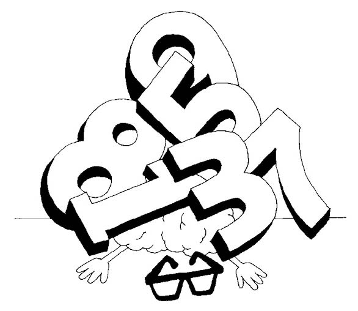
一本讨论数学问题的书是一定要介绍数字趣题的，否则就显得不够完整。我指的不是那些需要使用数字的问题（从前文可以看出，很多趣题都离不开数字），而是彰显了数字之美和数字规律的问题。它们不需要借助道具，也不需要通过各种奇思妙想来吸引人，而是直截了当地展现在你面前。尽管没有花哨的噱头，但数字趣题同样可以带给我们无穷的欢乐。即使是简单的求和，也能让我们乐此不疲。
你能求出从1至100的所有数字之和吗？
18世纪末，尚未成年的卡尔·弗雷德里希·高斯（Carl Friedrich Gauss）遇到了这个老调重弹的问题，结果这位未来的大数学家很快就给出了答案。至少我听到的故事是这样。他的老师以为他会把所有数字一个一个地加起来，但这位天才少年却发现了一个规律。
1 + 2 + 3 + 4 + …+ 97 + 98 + 99 + 100的结果，与依次从算式前后各取一个数两两相加再加总的结果相等：
(1 + 100) + (2 + 99) + (3 + 98) + (4 + 97) + … + (50 + 51)
这个算式的各个项都相等：
101 + 101 + 101 + 101 + … + 101
因此，总和就是50个101，即101×50 = 5 050。
高斯真是太聪明了！人们通常认为高斯是第一个想出这个方法的人。然而，早在1 000年前，阿尔昆就在他的《青少年趣味智力问题》一书中提出了同样的问题。
一个梯子共有100级，第一级上有一只鸽子，第二级上有两只鸽子，第三级上有三只鸽子，第四级、第五级上分别有四只和五只鸽子，以此类推，第100级上有100只鸽子。请问，梯子上一共有多少只鸽子？
情境不同，但算术过程显然是一样的，都需要从1加到100。阿尔昆也是采用两两相加的计算方法，但配对方式有所不同。他将梯子的第一级与倒数第二级加在一起，即1 + 99 = 100，再将第二级与倒数第三级加在一起，以此类推。
因此，他的求和算式是：
(1 +99) + (2 + 98) + (3 + 97) + … + (49 + 51)，再加上第50级上的50只鸽子与第100级上的100只鸽子。
即：
(49×100) + 50 + 100 = 4 900 + 150 = 5 050
与高斯的解法相比，阿尔昆的答案略显麻烦，但算起来更简单，因为乘数是100的乘法运算肯定比乘数是101的乘法运算简单。如果你像阿尔昆一样，使用的是罗马数字，那么最好还是采用阿尔昆的方法。
这两道题告诉我们，如果我们需要求一连串数字的和，不要古板地一个一个相加，而应该寻找规律并加以利用。
下面是三道非常棒的计算问题，供大家练习。
照镜子
下面两个求和算式，哪一个得数大？
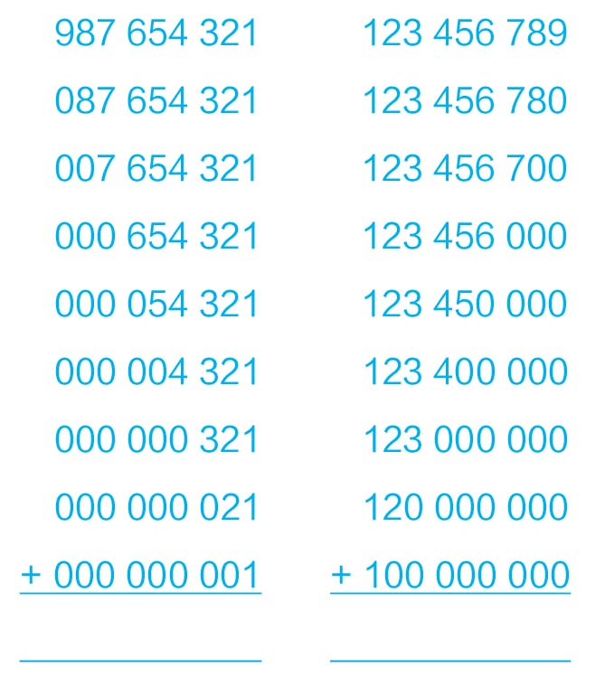
做高斯第二
以下是由1、2、3和4组成的所有24个四位数，按由小到大的顺序排列。请求出所有数的和。
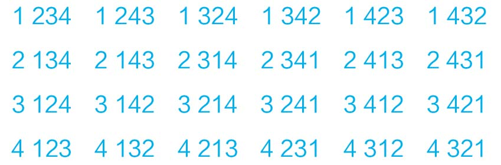
加法表
现在，我们在二维平面上考虑求和问题，大家应该都知道规则。请问，以下数字的和是多少？
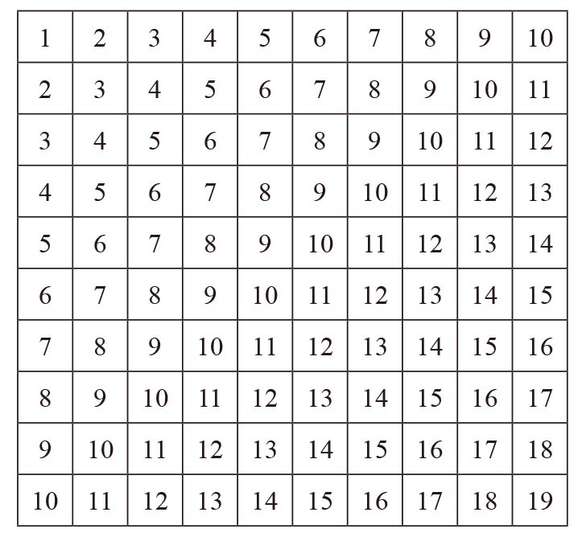
接下来的三道题堪称数学世界的图像诗。每道题都有9个空格，每个空格可以填入1~9中的一个数字。这些最简单的基本数字（除0以外的阿拉伯数字）组合到一起，给人一种赏心悦目的美感。
在9个空格里填入9个数字，一共有24 192种不同的填法。如果你每秒可以尝试一个组合，那么将所有这些组合全部尝试一遍，需要两周多的时间。因此，你需要想办法排除一些组合。
整整齐齐的9个数
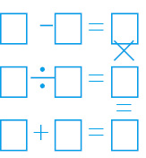
魔鬼等式
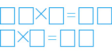
套在圆圈里的数
本题包括三个部分。在空格里填数，使每个圆圈里的数字之和等于11。重新填入数字，使各圆圈里的数字之和等于13。再填一次，使和等于14。
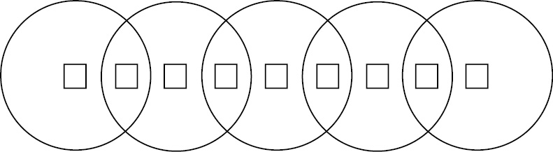
1743年，托马斯·迪尔沃斯（Thomas Dilworth）出版了他的《校长助手——算术实践及理论概要》（The Schoolmaster’s Assistant， Being a Compendium of Arithmetic both Practical and Theoretical）。后来，这本书成为深受英国人和美国人欢迎的数学教科书。该书中有这样一道题：
杰克对弟弟哈里说道：“我能用4个3列出一个算式，使得数为34。你能吗？”
答案是：33 +
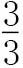
= 34。迪尔沃斯在他的书中第一次隆重介绍了这类趣题：用4个相同的数字列算式，使得数为特定值。在前面三个问题中，出题人给出了运算符号，答题人需要在这些运算符号之间填写数字。而在迪尔沃斯的问题中，数字是已知的，答题人需要在数字间填写运算符号。这类问题最常见的变体是“4个4”问题，是人们在迪尔沃斯去世100年后首次提出的。1881年，丘比特·塞恩沙（Cupidus Scientiae）在某一期《知识家》（Knowledge: an Illustrated Magazine of Science）杂志上说：“有的读者可能之前没有见过……前些天，我第一次听说，除了19这一个数字以外，从1~20（含）的所有数（以及很多大于20的数）都可以用4个4表示。表达式中可以使用任意运算符号，但是不能使用平方和立方符号，因为这两个符号需要使用其他数字。”
4个4问题虽然非常简单，但是妙趣横生，有一种令人难以置信的吸引力。仅仅使用4、4、4和4这几个数字，就可以算出很多得数，真是太令人吃惊了。不过，我们必须清楚丘比特·塞恩沙说的话，即可以算出哪些数，可以使用哪些符号。
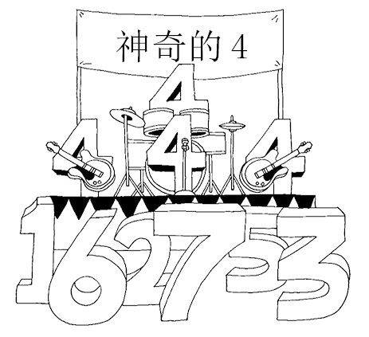
4个4
（1）用4个4算出0~9的所有数字。只允许使用+、-、×、÷、括号等基本的数学运算符号。算每个数时，都必须正好使用4个4。
（2）用4个4算出10~20的所有数字。除了基本运算符号以外，还可以使用、小数点（也就是说，可以写成 .4），也可以把多个数连到一起（也就是说，可以写成44、444或者4.4）。
（3）现在，热身活动结束，请继续算出21~50的所有数字。可以使用指数符号（也就是说，可以写成44）和阶乘符号（比如4！）。某个数的阶乘表示小于和等于该数的所有正整数的乘积，例如，4! = 4×3×2×1 = 24。
我先带领大家热一下身。首先，你可以通过下列方式，用4个4算出0：
4 – 4 + 4 – 4 = 0
太简单了！接下来，你可以算出1：
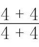
= 1算到50之后，还能再往前推进吗？不仅可以，而且有很大的余地。用上面列出的数学运算符号，我们可以算出0~100的几乎所有数，73、77、87和99除外，但“创新”应用更多的数学符号之后，也可以算出这些数，例如：
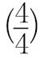
% –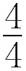
= 99（因为4个1/4等于100%）罗斯·鲍尔在1911年出版的《数学游戏及欣赏》（Mathematical Recreations and Essays）中提到了4个4趣题，并且说他“从未在出版物中见过此类问题，但这些问题似乎早已有之，而且流传甚广”。他还说，用4个4可以一直算到170。
在这本书于1917年再版之前，他一直在做这方面的研究。他说：“如果准许使用整数指数和子阶乘，那么我们可以算到877。”随后，他补充道：“用4个1可以算到34，4个2可以算到36，4个3可以算到46，4个5可以算到36，4个6可以算到30，4个7可以算到25，4个8可以算到36，4个9可以算到130。”只有4个4最特别，可以得到的结果远胜于其他数字。
还有人走得更远吗？有！20世纪20年代，我们在上一章结尾接及的数学物理学家保罗·狄拉克把4个4的运算结果扩展至无穷大[书 .免`费`分`享V.信shufoufou]。
事实上，狄拉克提出的解法是针对当时在剑桥大学风头正劲的4个2问题，但是这个方法同样适用于4个4问题。如果允许使用对数，那么任意数n都可以表示成log 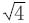
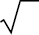
…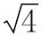
)的形式，其中n是平方根符号的个数。（如果你不知道对数的含义也无须着急，因为你只要知道这个答案不仅简明扼要而且可以随意变换就可以了。）狄拉克非常喜爱数学趣题，可以用一个精巧的公式对一个广为人知的问题进行归纳，他一定感到无比激动。格雷厄姆·法米罗（Graham Farmelo）在他所著的狄拉克传记《最奇怪的人》（The Strangest Man）中写道：“他使这个游戏失去了存在的意义。”1882年，距《知识家》杂志首次提出4个4问题仅过了一年时间，美国趣味问题设计人萨姆·劳埃德就公开发布了“我们的哥伦布问题”，开创了“利用数字确定运算符号”这种非同寻常的新题型。他悬赏1 000美元（相当于现在的20 000英镑），寻求最佳答案。回应者多达数百万人，但做对的只有两个人。当然，这是劳埃德公开的数据。劳埃德不仅是一位趣题设计人，还非常善于自我推销。我在这里介绍这道题，是为了维持历史的完整性，而不是认为你有能力给出正确答案。不服气的话，就用行动来证明我说错了吧！
我们的哥伦布问题
下面给出了7个数和8个点：
·4·5·6·7·8·9·0·
列出一个加法算式，使答案尽可能地接近82。
点有两种用法：第一，用作小数点；第二，置于一个数字或多个数字上方，表示循环小数。当点位于某一个数字上方时，就表示这个数字无限循环，例如，
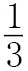
可以写成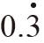
，而不用写成0.333 3…这种形式。如果两个数字上面都有点，则表示从第一个数字开始至第二个数字结束的数字序列无限循环，例如，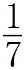
可以写成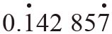
，而不用写成0.142 857 142 857…这种形式。热身活动就做到这里吧。但在你做其他题之前，可以先看看下面的题目。
3和8
你能用3、3、8和8这4个数，算出24吗？
只允许使用+、-、×、÷这4个最基本的数学运算符号和括号。
几年前，下面这道题被人们疯狂传播。与它一起流传的还有这样一句话：“学龄前儿童解这道题需要5~10分钟，程序员以及受教育程度更高的人则需要一小时……不信的话，试试看你就知道了！”我不知道这句话有没有得到科学验证，但我可以确定，听到这句话后，你肯定想试一试。
小孩子的把戏
8 809 = 6 5 555 = 0
7 111 = 0 8 193 = 3
2 172 = 0 8 096 = 5
6 666 = 4 1 012 = 1
1 111 = 0 7 777 = 0
3 213 = 0 9 999 = 4
7 662 = 2 7 756 = 1
9 313 = 1 6 855 = 3
0 000 = 4 9 881 = 5
2 222 = 0 5 531 = 0
3 333 = 0 2 581 = ?
数字可以用来表示数量，例如：一个段落，10个字，三句话。
但是，当数字排列到一起时，还可以表示某种先后次序。
接下来的三道题都涉及数列，每道题都要求我们寻找规律，然后说出下一个数应该是多少。
跟着箭头走（1）
77 → 49 → 36 → 18 → ?
下面这道题与本书开头的那道题是同一个人设计的，它们都是芦原伸之的作品。一个数列竟然可以这样循环往复，真是太神奇了！
跟着箭头走（2）
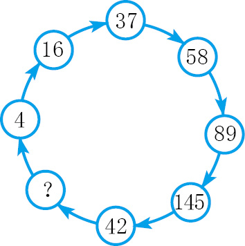
跟着箭头走（3）
10 → 9 → 60 → 90 → 70 → 66 → ?
我写作的内容都与数学有关，因此我离不开数字，也离不开文字。在这种情况下，如果一道题可以将数字与文字联系到一起，自然会让我更欢喜。
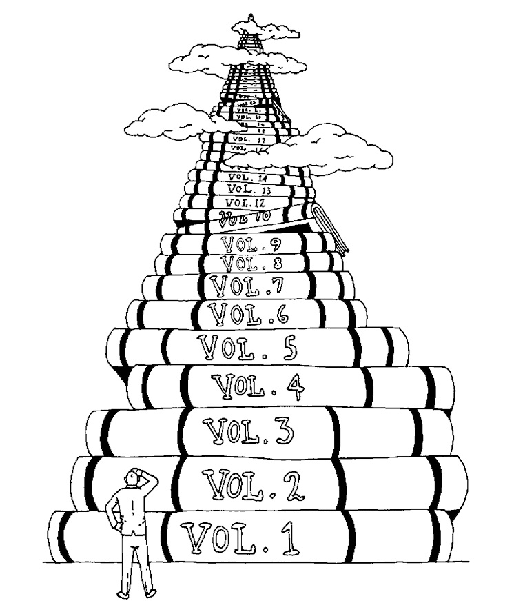
字典难题
一本字典按照字母顺序收集了1~1 000的五次方的所有整数（即1~1 000 000 000 000 000）。请说出以下条目：
第一个条目。
最后一个条目。
第一个奇数。
排在最后的奇数。
为避免歧义，我对字典遵循的规则做以下说明：
（1）所有单词均采用美式英语拼写规则，略去“and”。例如，2001在字典中写作“two thousand one”，而不是“two thousand and one”。
（2）100写作“one hundred”，1 000写作“one thousand”，以此类推。
（3）空格与连字符忽略不计。例如，“fourteen”排在“four trillion”的前面。
萨姆·劳埃德是最早利用单词表示数字的趣题设计者之一。他的“趣题杂货店”列出了以下商品：
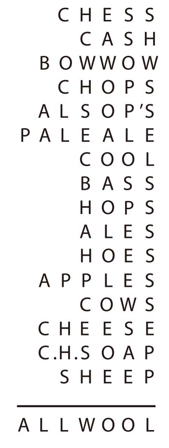
我们用“PEACH BLOWS”（土豆的一种）这10个字母依次代表1、2、3、4、5、6、7、8、9和0这10个数字，即P = 1，E = 2，A = 3，C = 4，H = 5，以此类推。因此，单词“CHESS”代表45 200，“CASH”代表4 305。如果我们把上面列出的15个单词看作加法算式中的数，这个加法算式的正确答案就是最后那个单词——“ALLWOOL”，即3 779 887。
劳埃德的这道题设计巧妙，但涉及的数字太多，所以显得有点儿混乱，也使趣味性受损。但是后来，这种设计（把字母换成数字后，一个有意义的表达就变成了一个特定的值）经亨利·恩斯特·杜德尼之手得以完善，进而演变为现在的密码算术、字母算术、覆面算。1924年，杜德尼发布了下面这道题（至今，这道题仍然是同类问题的杰出代表）：
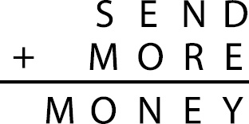
要解决这道题，你必须找出使这个求和算式成立的数字（根据题意，每个字母代表不同的数字，而且首位字母都不是0。）
劳埃德比杜德尼大16岁，也是唯一可以在产量与创造性上与杜德尼相提并论的同时代的趣题设计人。这两个隔大西洋相望的人有过书信往来，但后来杜德尼发现劳埃德将他设计的趣题据为己有，便与劳埃德断绝了联系。事实上，这两个人的性格是他们两个国家传统国民形象的典型体现。劳埃德既是一台精力充沛、不知疲倦的趣题制造机器，还是一个典型的企业家，有了好的想法就会申请专利，愿意花钱奖励答题人，成名之后还对自己的传记进行了修饰。而杜德尼则是一个典型的英国乡下人，叼着一个烟斗，脾气很坏。
“SEND MORE MONEY”（再送一点儿钱）是一道流传甚广的趣题，因此我把它也介绍给大家。做这道题时，应该从字母M入手。因为是两个四位数相加，和又是一个五位数，所以这个五位数的首位数只能是1，也就是说，字母M代表1。（最大的四位数是9 999。两个9 999相加，和是19 998，首位数是1。因此，两个四位数相加时，如果和是五位数，其和的首位数不可能大于或等于2。）
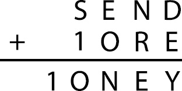
要使S + 1 = 1O（其中O是大写字母，而不是0）成立，要么S = 9，要么S = 8且从百位进1。假设S = 8且从百位进1（百位有进位，意味着大写字母O只能是0），算式就会变成：
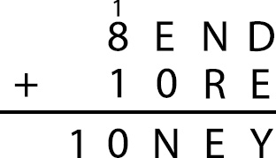
为看得清楚，我把进位的1标在8的上方。如果加法算式成立，那么根据百位上的情况，要么E + 0 = 10 + N，要么1 + E + 0 = 10 + N（从十位进1）。这两个等式中的10表示向千位进1。前一个等式意味着E和N之间的差是10，由于E和N均小于10，所以这种情况不可能发生。后一个等式意味着E – N = 9，因此E只能等于9，且N只能等于0。但是，我们已经知道大写字母O等于0，且不同字母代表不同的数字。因此，1 + E + 0 = 10 + N这种情况也不可能发生。由此可见，S = 9。接下来的工作就交给大家完成了。（答案详见书后。）
字母算术题比比皆是，但是下面这一道深得我的喜爱，因为它就是莎士比亚戏剧《麦克白》（Macbeth）中的那句名言（Double, double toil and trouble）的完美翻版，唯一的区别在于“toil”和“trouble”之间少了一个“and”。但是，如果把加号换到一个巧妙的位置……
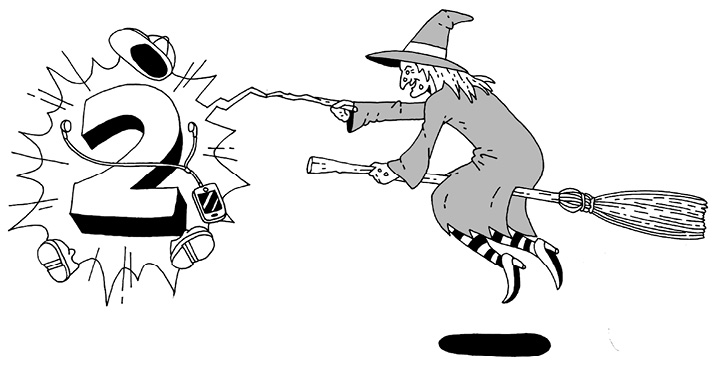
三个女巫
确定各个字母代表的数字，使加法算式成立：
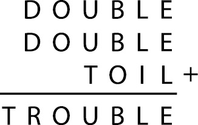
再来一道字母算术题，这道题设计新颖，有令人难以抗拒的吸引力。
奇数和偶数
在下面这个乘法竖式中，每个E都表示一个偶数，每个O都表示一个奇数。换言之，每个E代表0、2、4、6、8这5个数字中的一个，而每个O代表1、3、5、7、9这5个数字中的一个。但是，E可以代表不同的数字，尽管它也可能代表相同的数字。你能还原这个乘法竖式吗？（个位上的空格表示这个位置上是一个0。但是，0这个数字容易与O混淆，因此算式中略去了这个符号。也就是说，乘法竖式在这个位置上的数肯定是0，因此不需要做推断。）
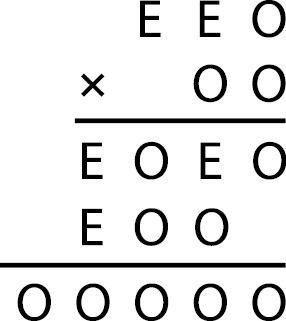
这道题是数学教授、魔术师威廉·菲奇·切尼（William Fitch Cheney）于20世纪60年代初设计出来的，随后刊登在马丁·伽德纳（Martin Gardner）在《科学美国人》（Scientific American）杂志上主持的“数学游戏”专栏上。如果说萨姆·劳埃德是美国最伟大的趣题设计者，伽德纳就是美国最伟大的数学趣题推广者。伽德纳开在《科学美国人》杂志上的专栏持续了20多年。借助这个专栏，以及他出版的几十本专著，伽德纳收集、介绍了大量的数学趣题，数量之多，无人能及。此外，他还是一个人数众多的非正式趣题爱好者组织的核心人物（菲奇·切尼也是该组织的成员），他的专栏成了这些爱好者奇思妙想的展示舞台。
下面这道题的设计者李·赛洛斯（Lee Sallows）是一位数学文字游戏大师，无数人通过马丁·伽德纳的介绍接触到赛洛斯的作品。在我看来，这个设计巧妙的自描述填字游戏（self-enumerating crossword）无疑是一件艺术品。
自带提示信息的填字游戏
在下图所示的填字游戏中，每个条目都遵从以下格式：
（数字）（空格）（字母）（S）
同时，每个条目都准确地反映了某个字母在整个填字网格中出现的次数。
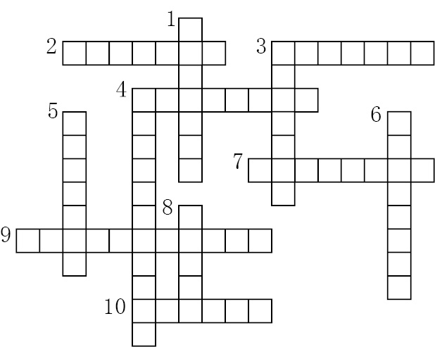
例如，如果字母“Q”在这个网格中一共只出现1次，就必然有这样一个条目：
“ONE Q”（1个Q）
如果网格中有5个“P”、17个“E”，就必然有下面这两个条目：
“FIVE PS”（5个P）
“SEVENTEEN ES”（17个E）
换言之，每个条目都是由数词、空格和该条目所涉及的字母构成的。如果该字母出现不止一次，则条目末尾处还要加上“S”。每个条目关于该字母在网格中出现次数的描述都是正确的。
请通过逻辑推理，完成这个填字游戏。
这个填字游戏把提示信息巧妙地植入了填字空格。整个网格一共涉及12个字母，每个字母对应一个条目。
为了方便大家做题，我先告诉你如何填入前三个字母。纵8只有5个空格，因此它只能是“ONE*”的形式，其中“*”代表一个字母。（记住，只要条目中包含的数词大于1，整个条目就至少要占6个空格，因为还需要在条目的末尾添加表示复数的“S”。）
接下来，就靠你自己了。
如果填字游戏可以自带提示信息，那么数字是否可以呢？
我告诉大家一个办法。例如，数字1 210就自带提示信息：第一位数（即1）表明了0的个数，第二位数（2）表明了1的个数，第三位数（1）表明了2的个数，第四位数（0）则告诉我们这个数字里有几个3。如果把1 210这个数填写到表格中，就可以清楚地看出它有自我描述的特点。
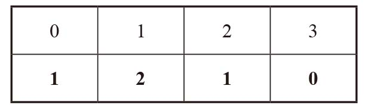
表格第二行中的每个数字分别表示它上方的数字在第二行中出现的次数。
像1 210这样的数字叫作自传数（autobiographical number）。这类数字的第一位数表示该数字中含有0的个数，第二位数表示1的个数，第三位数表示2的个数，以此类推。四位数中的自传数只有两个，即1 210和2 020。
五位数中的自传数只有一个，即21 200。
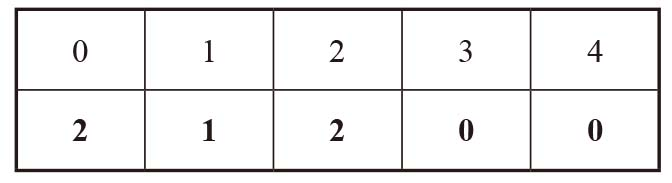
这个数含有2个0，1个1，2个2，0个3，0个4。
明白了吗？下面开始做题吧。
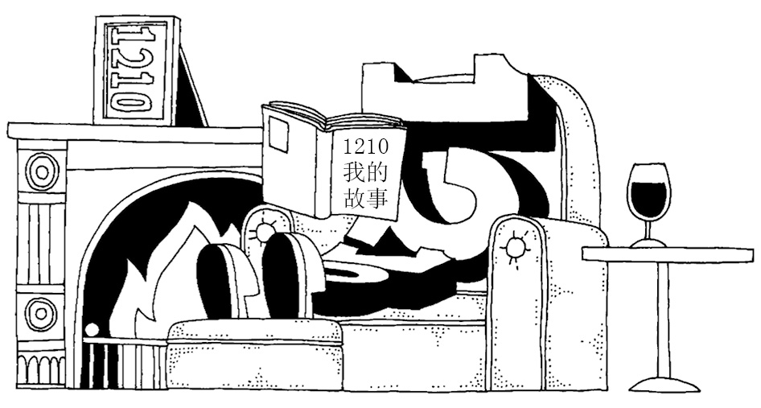
十位数中的自传数
十位数中的自传数只有一个，请找出这个数。
我们把这个数填入下表第二行的空格中。填入的每个数都与它上方的阿拉伯数字在这个自传数中出现的次数一致。
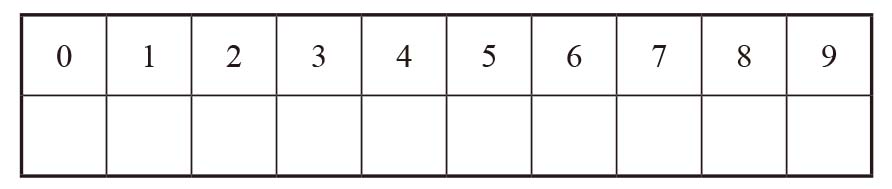
包含1、2、3、4、5、6、7、8、9、0这10个阿拉伯数字的数叫作泛迪吉多数（pandigital number），例如1 234 567 890。（泛迪吉多数的首位不能为0。）
泛迪吉多数引发的混乱
十位的泛迪吉多数有多少个？
十位的泛迪吉多数有一个非常有趣的特点：它们都可以被3整除。
学校老师教过我们验证一个数是否可以被3整除的方法。我们把一个数的所有数位上的数字相加，如果和可以被3整除，这个数就可以被3整除。
在十位的泛迪吉多数中，所有10个阿拉伯数字都只能出现一次。所有位数相加，就会得到1 + 2 + 3 + 4 + 5 + 6 + 7 + 8 + 9 + 0 = 45。45可以被3整除，说明所有十位的泛迪吉多数都可以被3整除。太棒了！
此外，还有一些整除验证方法，但是知名度没有那么高：
被4整除的验证方法：如果一个数的最后两位可以被4整除，该数就可以被4整除。
被8整除的验证方法：如果一个数的最后三位可以被8整除，该数就可以被8整除。
想知道这两个验证方法为什么有效吗？
不想知道？好吧，不管你想不想知道，都不影响你在做下面这道题时应用这些方法。
泛迪吉多数与泛整除性
找出符合下列条件的十位泛迪吉多数a bcd efg h ij：
a可以被1整除；
ab可以被2整除；
abc可以被3整除；
a bcd可以被4整除；
ab cde可以被5整除；
abc def可以被6整除；
a bcd efg可以被7整除；
ab cde fgh可以被8整除；
abc def ghi可以被9整除；
a bcd efg hij可以被10整除。
问题中列出的这些条件最终指向一个唯一的答案，因此给人一种雅致简约的美感。你可能需要准备一个计算器，但这不会破坏你做题的感觉。
心中默想一个数。
这个数必须是一个三位数，并且它的首位和末位之差不得小于2，例如258。
把这个数前后颠倒，然后求两个数的差。
还是以258为例，852 – 258 = 594。
把求得的差前后颠倒，然后与自身相加：594 + 495。
最后得数是1 089。
现在，请重新想一个数，然后重复上述步骤：前后颠倒、求两数之差，前后颠倒、求和，得数是多少呢？
没错，答案仍然是1 089。
不管你最初想的那个三位数是几，最终你都会得到1 089。第一次玩这个游戏的时候，你肯定会觉得不可思议。
但1 089在算术研究中值得关注，不只是这一个原因。
1 089与它的同类数
1 089乘以9之后，各个数位的次序正好前后颠倒：
1 089×9 = 9 801
你能找到与4的乘积正好是它自身前后颠倒的四位数吗？换句话说，找到满足下列条件的数a b cd：
a bcd×4 = d c ba
102 564与4的乘积也有一个令人惊讶的特点：
102 564×4 = 410 256
有没有看出其中的玄机？102 564的末位数变成了410 256的首位数，而其余数字的先后次序不变。也就是说，102 564乘以4后，乘积是由相同的一组数字组成的，但是原来排在末位的数在乘积中变成了首位数。
下面这个等式也有同样的变化。
142 857×5 = 714 285
第一个数的末位数，即7，变成了得数的首位数，而其余各个数位上的数保持不变。
末位数变首位数
N乘以2之后，乘积的位数与N相同，N的末位数正好是乘积的首位数，其余所有位数的先后次序不变。你能找出一个符合条件的N吗？
（换句话说，N乘以2之后，会发生102 564乘以4以及142 857乘以5之后的变化。）
英国著名物理学家弗里曼·戴森（Freeman Dyson）在出席一个科学会议时，听到餐厅里有人讨论这个问题。
于是，他忍不住插嘴道：“这个问题不难，但是符合条件的数最少是一个18位数。”
《纽约时报》称，戴森的同事们听到这句话后都惊呆了，他们不知道“戴森是如何得出这个结论的，更令人吃惊的是，他在听到问题后仅用了两秒钟的时间就给出了这个答案”。
戴森的结论是正确的，而且只需要小学数学知识就可以解开这道题。
随着本书写作的不断深入，我们讨论的数字也变得越来越大了。事实上，有的数字太大了，以至于我们没有足够的篇幅写出这些数。
9次幂
下面给出的9个数，分别是319、329、339、349、359、369、379、389和399的最后四位数，但是先后次序被打乱了。
你能将这些数按照由小到大的顺序排列吗？
… 2 848
… 5 077
… 1 953
… 6 464
… 8 759
… 8 832
… 0 671
… 1 875
… 8 416
看到下面这道题，你会认为计算399的难度其实不值一提。
指数变成64后
估算264的值。
在本书的最后一个数亮相之后，就连264也显得微不足道。
好多好多的0
数字100！最后有多少个0？
我在前文中讨论过阶乘的概念。100！是指100与所有小于它的正整数的乘积，也就是说，它等于100×99×98×97×96×…×3×2×1。不要真的把这个答案计算出来（它有158位数），而是运用你的数学头脑，想一想末尾的那些0是怎么来的。